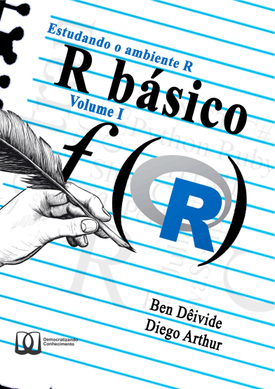

[1] Inf[1] -Inf[1] NaNVetores

Usaremos Batista e Oliveira (2022):

Podemos dizer que existem três tipos principais de vetores atômicos:
numeric):
integer);double);logical);character)Existem dois tipos raros que são os complexos (complex) e brutos (raw), que falaremos no módulo seguinte.
TRUE, FALSE, Inf, -Inf, NaN, NA;double podem ser representados de forma decima (0.123), científica (1.23e5), ou hexadecimal (3E0A);integer são representados pela letra L ao final do número inteiro, isto é, 1L, 1.23e5L, etc.;"Ben", "a". Pode ser utilizado também uma aspa, 'Ben', 'a', etc.c()rep(), seq(), :c()rep(), seq(), :| Função (Ou operador) | Finalidade |
|---|---|
^ ou ** |
Expoenciação binária, isto é 2^3 ou 2 ** 3 |
%/% |
Divisão inteira |
%% |
Restante da divisão |
sum() |
Soma de elementos do vetor |
prod() |
Produtório dos elementos do vetor |
sqrt() |
Raiz quadrada dos elementos de um vetor |
log() |
Função Logaritmo neperiano |
| Função (Ou operador) | Finalidade |
|---|---|
exp() |
Função exponencial |
mean() |
Média dos elementos de um vetor |
sd() |
Desvio padrão dos elementos de um vetor |
var() |
Variância dos elementos de um vetor |
median() |
Mediana dos elementos de um vetor |
| Operador Lógico | Sintaxe | Pergunta |
|---|---|---|
< |
a < b |
a é menor que b? |
> |
a > b |
a é maior que b? |
== |
a == b |
a é igual b? |
!= |
a != b |
a é diferente b? |
>= |
a >= b |
a é maior ou igual a b |
<= |
a <= b |
a é menor ou igual a b? |
%in% |
"a" %in% c("a", "b", "c") |
O elemento "a" está no vetor c("a", "b", "c")? |
| Operador Booleano (ou Função) | Sintaxe | Pergunta |
|---|---|---|
& ou && |
cond1 & cond2 |
As cond1 e cond2 são verdadeiras? |
| ou || |
cond1 | cond2 |
A cond1 ou cond2 é verdadeira? |
xor() |
xor(cond1, cond2) |
Apenas a cond1 ou a cond2 é verdadeiro? |
! |
!cond1 |
É falso a cond1 ? |
any() |
any(cond1, cond2, ...) |
Alguma das condições são verdadeiras? |
all() |
all(cond1, cond2, ...) |
Todas as condições são verdadeiras? |
Sugestões, perguntas, críticas…